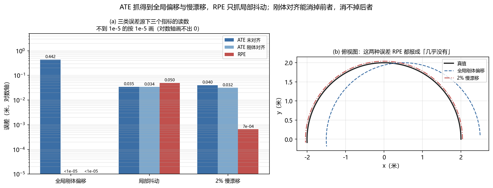

关键数据集与基准：评估无人机世界模型¶
预计阅读：18 分钟 | 前置知识：数据集概念、评估指标基础、无人机系统基础
1. 为什么数据集和基准很重要？¶
世界模型的评估面临独特的挑战：如何衡量一个模型对世界的"理解"程度？数据集和基准提供了标准化的评估框架，使得不同方法可以在相同条件下公平比较。
graph TB
A[数据集与基准的价值] --> B[公平比较<br/>统一评估标准]
A --> C[进展追踪<br/>量化研究进展]
A --> D[问题发现<br/>识别技术瓶颈]
A --> E[方向指引<br/>引导未来研究]这一领域的关键数据集和基准有四个：MotionScape、AeroVerse Benchmark、Crazyflie Benchmark 和 CARLA-Air。
2. MotionScape：无人机未来视频生成基准¶
2.1 论文概述¶
论文： "MotionScape: A Motion-Stratified UAV Video Benchmark for World Modeling and Future Video Generation" arXiv： 2604.07991（v2，2026-09 更新） GitHub： Thelegendzz/MotionScape · Zenodo： DOI 10.5281/zenodo.21954342 核心贡献： 面向多条件无人机视角未来视频生成的评测基准：228 段高分辨率视频、62,700 帧，配天气与光照、场景环境、相机视角运动三类语义标注，并按光流强度分成低/中/高三档运动层。
2.2 数据集规格¶
| 属性 | 规格 |
|---|---|
| 片段 / 帧数 | 228 段 / 62,700 帧 |
| 总时长 | 约 34.9 分钟 |
| 分辨率 | 1080p 起（源视频要求 ≥1080p） |
| 帧率 | 29.97 FPS（每段标准化为 275 帧） |
| 源视频数 | 67 个（每个源平均取 3.4 段） |
| 位姿真值 | 无 |
| 运动分层 | 按光流强度分 low / medium / high 三档 |
| 评测协议 | Text2World / Image2World / Video2World |
2.3 数据来源¶
graph LR
A[YouTube 公开的<br/>无人机 / FPV 视频] --> B[CLIP 辅助筛选]
B --> C[人工确认]
C --> D[裁成 275 帧片段<br/>标准化 29.97 FPS]
D --> E[光流强度分层<br/>low / medium / high]
E --> F[三字段语义标注]数据不是自采的。论文 v1 原句："The raw candidate videos in our dataset are mainly drawn from manually pre-screened UAV video compilations on YouTube."
2.4 数据标注¶
v2 的标注只有三个字段：
| 标注字段 | 内容 |
|---|---|
| weather and illumination | 天气与光照类别 |
| scene environment | 场景环境的自由文本描述（≤5 词） |
| camera-viewpoint motion | 相机视角运动 |
2.5 评测协议¶
| 条件设定 | 输入 | 评测什么 |
|---|---|---|
| Text2World | 文本描述 | 由语言条件生成未来视频 |
| Image2World | 首帧图像 | 由单帧外推未来 |
| Video2World | 已有视频前缀 | 由视频上下文续写 |
论文用代表性基线模型做了技术验证，按条件设定与运动层分别报分数，目的是给无人机世界模型的「未来视觉模拟能力」提供统一平台。
3. AeroVerse Benchmark¶
3.1 概述¶
AeroVerse 是一篇基准套件（benchmark suite）论文，不是综述。它给出「仿真 → 预训练 → 微调 → 评测」的完整链路：一个仿真器、若干数据集，以及一个基于 GPT-4 的自动评测器 SkyAgent-Eval。
3.2 五个下游任务¶
graph TB
A[AeroVerse 基准套件] --> B[场景感知<br/>scene awareness]
A --> C[空间推理<br/>spatial reasoning]
A --> D[导航探索<br/>navigational exploration]
A --> E[任务规划<br/>task planning]
A --> F[运动决策<br/>motion decision]论文原句："we clearly define 5 downstream tasks, i.e., aerospace embodied scene awareness, spatial reasoning, navigational exploration, task planning, and motion decision."
3.3 评估指标¶
论文的评测量是文本生成类指标加一个基于 GPT-4 的 LLM 裁判：
| 指标族 | 具体指标 | 用在哪 |
|---|---|---|
| 传统文本指标 | BLEU-1 / BLEU-2 / BLEU-3 / BLEU-4 | 生成式任务的 n-gram 重合 |
| 语义指标 | CIDEr | 同上，加权 n-gram 共识 |
| 自动裁判 | GPT-4 驱动的 SkyAgent-Eval | 由 LLM 对回答质量打分 |
论文原句："Common indicators include BLEU-1, BLEU-2, BLEU-3, and BLEU-4." / "we introduce an automated evaluation method based on GPT-4 for tasks related to aerospace embodied scene awareness ... and path planning."
3.4 基准场景¶
| 场景 | 说明 |
|---|---|
| Shanghai | 城市仿真场景 |
| Shenzhen | 城市仿真场景 |
| School | 校园场景 |
| Residence | 住宅区场景 |
论文原句："This encompasses four real-world urban scenarios, i.e., Shanghai, Shenzhen, School, and Residence."
4. Crazyflie Nano-Drone Benchmark¶
4.1 论文概述¶
论文： "Nonlinear System Identification Nano-drone Benchmark" arXiv： 2512.14450 核心贡献： 首个公开的纳米无人机真实飞行轨迹系统辨识基准：Crazyflie 2.1 Brushless 平台上的 4 条激进轨迹、75k 真实样本，4 维电机输入配 13 维状态输出。
4.2 平台¶
graph LR
subgraph "Crazyflie 2.1 Brushless"
A[整机质量 sub-50g] --> B[STM32F405 飞控]
B --> C[BMI088 IMU]
C --> D[VL53L1X ToF]
D --> E[PMW3901 光流]
E --> F[nRF51822 电台]
end论文实际给出的部件清单：
| 部件 | 型号 |
|---|---|
| 飞控 MCU | STM32F405 |
| IMU | BMI088 |
| 测距 | VL53L1X ToF |
| 光流 | PMW3901 |
| 电台 | nRF51822 |
4.3 基准任务¶
这个基准的「任务」不是悬停避障，而是系统辨识：
| 项目 | 内容 |
|---|---|
| 轨迹 | 4 条激进轨迹 |
| 输入 | 4 维电机转速指令 |
| 输出 | 13 维状态测量 |
| 样本量 | 75k 真实飞行样本 |
| 评测 | 单步预测误差与多步误差传播 |
论文原句："The dataset comprises four aggressive trajectories with synchronized 4-dimensional motor inputs and 13-dimensional output measurements."
4.4 与机载部署的关系¶
在 Crazyflie 这一级平台上部署世界模型确实要面对极端的资源限制，但这篇论文不涉及模型压缩：全文没有量化、剪枝、蒸馏或压缩的内容。想讨论机载压缩，应引 04-边缘VLM部署 与 05-机载部署与优化，而不是引这个基准。
5. CARLA-Air 仿真平台¶
5.1 概述¶
CARLA-Air 是基于 CARLA 自动驾驶仿真器扩展的无人机仿真平台，提供高保真的城市环境和物理模拟。
5.2 平台架构¶
graph TB
subgraph CARLA-Air 架构
A[Unreal Engine 4] --> B[CARLA 核心]
B --> C[无人机物理引擎]
B --> D[传感器模拟]
B --> E[场景生成]
B --> F[天气系统]
end
subgraph 传感器模拟
D --> G[RGB 相机]
D --> H[深度相机]
D --> I[语义分割]
D --> J[LIDAR]
D --> K[IMU]
D --> L[GPS]
end
subgraph 场景生成
E --> M[城市环境]
E --> N[室内环境]
E --> O[动态物体]
E --> P[交通场景]
end5.3 功能特性¶
| 特性 | 描述 | 对世界模型的价值 |
|---|---|---|
| 高保真渲染 | 基于 UE4 的逼真渲染 | 视觉世界模型训练 |
| 物理模拟 | 精确的空气动力学 | 动力学世界模型训练 |
| 传感器模拟 | 多种传感器模型 | 多模态世界模型 |
| 场景多样性 | 丰富的人物、车辆 | 泛化能力评估 |
| Python API | 易于使用的接口 | 快速原型开发 |
5.4 与真实数据的对比¶
| 方面 | CARLA-Air | 真实数据 | 差距 |
|---|---|---|---|
| 视觉质量 | 高 | 很高 | 小 |
| 物理准确性 | 中 | 很高 | 中 |
| 数据多样性 | 可控 | 不可控 | - |
| 标注质量 | 完美 | 有噪声 | - |
| 采集成本 | 低 | 高 | - |
| 安全性 | 安全 | 有风险 | - |
6. 其他重要数据集¶
6.1 EuRoC MAV Dataset¶
| 属性 | 规格 |
|---|---|
| 类型 | MAV 飞行数据 |
| 传感器 | 双目相机 + IMU |
| 场景 | 室内房间 |
| 标注 | 高精度真值 (Vicon/Leica) |
| 应用 | VIO/SLAM 评估 |
6.2 TUM-VI Dataset¶
| 属性 | 规格 |
|---|---|
| 类型 | 视觉-惯性数据 |
| 传感器 | 双目相机 + IMU |
| 场景 | 室内外混合 |
| 标注 | 6-DoF 真值 |
| 应用 | 视觉惯性里程计评估 |
6.3 Zurich Urban MAV Dataset¶
| 属性 | 规格 |
|---|---|
| 类型 | 城市 MAV 飞行 |
| 传感器 | 相机 + IMU + GPS |
| 场景 | 城市环境 |
| 标注 | GPS 真值 |
| 应用 | 城市导航评估 |
7. 数据集对比总结¶
7.1 综合对比表¶
| 数据集 | 类型 | 规模 | 传感器 | 场景 | 精度 | 主要用途 |
|---|---|---|---|---|---|---|
| MotionScape | 视频基准 | 228 段 / 62,700 帧 | 无（公开视频） | 67 个源视频 | 无位姿真值 | 未来视频生成评测 |
| AeroVerse | 基准套件 | 5 个下游任务 | 仿真 + 真实 | 4 个城市 | 由仿真给出 | 综合评估 |
| Crazyflie | 系统辨识 | 75k 样本 | IMU + ToF + 光流 | 室内 | 真实飞行数据 | 动力学辨识 |
| CARLA-Air | 仿真 | 无限 | 多种模拟 | 城市 | 高 (仿真) | 训练, 评估 |
| EuRoC | MAV 飞行 | 11 序列 | 双目 + IMU | 室内 | 高 | VIO/SLAM |
| TUM-VI | 视觉惯性 | 28 序列 | 双目 + IMU | 室内外 | 高 | VIO 评估 |
7.2 选择指南¶
graph TB
A[选择数据集] --> B{研究目标?}
B -->|视频生成| C[MotionScape]
B -->|综合评估| D[AeroVerse]
B -->|资源受限| E[Crazyflie]
B -->|大规模训练| F[CARLA-Air]
B -->|VIO/SLAM| G[EuRoC / TUM-VI]
C --> H[228 段 / 62,700 帧的<br/>UAV 未来视频生成基准]
D --> I[多维度评估]
E --> J[纳米无人机平台]
F --> K[仿真环境]
G --> L[高精度真值]8. 评估指标详解¶
本节所有代码只依赖 numpy（code/requirements.txt 里也没有 cv2 与 scipy），可以直接复制运行。
8.1 感知指标¶
ATE (Absolute Trajectory Error)：
def compute_ate(estimated_poses, ground_truth_poses):
"""
计算绝对轨迹误差
"""
errors = []
for est, gt in zip(estimated_poses, ground_truth_poses):
position_error = np.linalg.norm(est[:3, 3] - gt[:3, 3])
errors.append(position_error)
ate_rmse = np.sqrt(np.mean(np.array(errors)**2))
return ate_rmse
RPE (Relative Pose Error)：
def compute_rpe(estimated_poses, ground_truth_poses, delta=1):
"""
计算相对位姿误差
"""
errors = []
for i in range(len(estimated_poses) - delta):
# 相对位姿
est_rel = np.linalg.inv(estimated_poses[i]) @ estimated_poses[i + delta]
gt_rel = np.linalg.inv(ground_truth_poses[i]) @ ground_truth_poses[i + delta]
# 误差
error = np.linalg.inv(gt_rel) @ est_rel
translation_error = np.linalg.norm(error[:3, 3])
errors.append(translation_error)
rpe_rmse = np.sqrt(np.mean(np.array(errors)**2))
return rpe_rmse
8.2 预测指标¶
SSIM (Structural Similarity Index)：
def compute_ssim(image1, image2, sigma=1.5, radius=5):
"""
计算结构相似性（只依赖 numpy，不需要 cv2）
"""
C1 = (0.01 * 255)**2
C2 = (0.03 * 255)**2
def blur(img):
# 可分离高斯：先沿行再沿列，等价于二维高斯核
x = np.arange(-radius, radius + 1, dtype=float)
k = np.exp(-(x ** 2) / (2 * sigma ** 2))
k /= k.sum()
out = np.apply_along_axis(
np.convolve, 0,
np.pad(img, ((radius, radius), (0, 0)), mode="reflect"), k, "valid")
return np.apply_along_axis(
np.convolve, 1,
np.pad(out, ((0, 0), (radius, radius)), mode="reflect"), k, "valid")
mu1, mu2 = blur(image1), blur(image2)
sigma1_sq = blur(image1**2) - mu1**2
sigma2_sq = blur(image2**2) - mu2**2
sigma12 = blur(image1 * image2) - mu1 * mu2
ssim_map = ((2 * mu1 * mu2 + C1) * (2 * sigma12 + C2)) / \
((mu1**2 + mu2**2 + C1) * (sigma1_sq + sigma2_sq + C2))
return ssim_map.mean()
注意：
cv2.GaussianBlur默认用 BORDER_REFLECT 且核宽 11、σ=1.5，与这里的radius=5（核长 11）、sigma=1.5、mode="reflect"对齐。换实现要对齐这三项， 否则同一个 SSIM 会算出不同的数。
FID (Frechet Inception Distance)：
def sqrtm_psd(A):
"""
对称半正定矩阵的平方根（只依赖 numpy，不需要 scipy.linalg.sqrtm）
"""
w, V = np.linalg.eigh((A + A.T) / 2)
return (V * np.sqrt(np.clip(w, 0.0, None))) @ V.T
def compute_fid(real_features, generated_features):
"""
计算 FID 分数
"""
# 计算均值和协方差
mu_real = np.mean(real_features, axis=0)
sigma_real = np.cov(real_features, rowvar=False)
mu_gen = np.mean(generated_features, axis=0)
sigma_gen = np.cov(generated_features, rowvar=False)
# trace(sqrtm(A @ B)) 用 A^{1/2} B A^{1/2} 的谱来算：乘积不必对称，
# 但它与 A^{1/2} 相似，特征值相同，数值上比直接对乘积开方稳
sh = sqrtm_psd(sigma_real)
M = sh @ sigma_gen @ sh
w = np.linalg.eigvalsh((M + M.T) / 2)
fid = (mu_real - mu_gen) @ (mu_real - mu_gen) \
+ np.trace(sigma_real + sigma_gen) \
- 2 * np.sum(np.sqrt(np.clip(w, 0.0, None)))
return fid
8.3 规划指标¶
| 指标 | 公式 | 含义 | 理想值 |
|---|---|---|---|
| Path Length | L = Σ||p_{i+1} - p_i|| | 路径总长度 | 越短越好 |
| Collision Rate | CR = n_collision / n_total | 碰撞概率 | 0 |
| Smoothness | S = Σ||a_{i+1} - a_i|| | 路径平滑度 | 越小越好 |
| Energy Cost | E = Σ||u_i||² | 能量消耗 | 越小越好 |
| Success Rate | SR = n_success / n_total | 任务成功率 | 1 |
指标本身也会看走眼。 上面这些量在单步、rollout、决策三类误差上各有盲区，孤立审计还会误判「修好了没有」，见 07-世界模型评测与诊断。
9. 动手验证：ATE 和 RPE 量的不是同一件事¶
8.1 节把 ATE 定义成「绝对轨迹误差」、RPE 定义成「相对位姿误差」。两个名字读起来都像「这条轨迹有多准」，但它们问的不是同一个问题：ATE 比每一帧的绝对位姿，RPE 比相邻帧之间的相对运动。这一节把三种误差源分开构造，看两个指标各自对什么敏感。
三组扰动都作用在同一条 4 秒、200 帧（50 Hz）、半径 2 m 的参考轨迹上：
- 全局刚体偏移：整条估计轨迹平移 0.5 m 再偏航 3°。每一帧位姿都错，但相邻帧之间的相对运动一点没变。
- 局部抖动：每帧位置独立加 σ = 0.02 m 的噪声。相对运动被破坏，误差不累积。
- 2% 慢漂移：位置整体放大 2%（尺度标定没做准就长这样）。误差随离原点的距离累积，可每一帧的相对运动几乎没变。
另外，ATE 这个数报出来之前必须先说清有没有做轨迹对齐，所以下面同时给出未对齐与Umeyama 刚体对齐后两个读数。
9.1 三种扰动与三个指标¶
import numpy as np
N, DT, R, W = 200, 0.02, 2.0, 0.8
t = np.arange(N) * DT
P = np.zeros((N, 4, 4)); P[:, 3, 3] = 1.0; P[:, 2, 2] = 1.0
P[:, 0, 0] = np.cos(W * t); P[:, 0, 1] = -np.sin(W * t)
P[:, 1, 0] = np.sin(W * t); P[:, 1, 1] = np.cos(W * t)
P[:, :3, 3] = np.stack([R * np.cos(W * t), R * np.sin(W * t), 0.4 * np.sin(1.7 * W * t)], 1)
def ate(est, gt):
return float(np.sqrt(np.mean(np.linalg.norm(est[:, :3, 3] - gt[:, :3, 3], axis=1) ** 2)))
def rpe(est, gt, d=1):
e = np.linalg.inv(est[:-d]) @ est[d:]; g = np.linalg.inv(gt[:-d]) @ gt[d:]
return float(np.sqrt(np.mean(np.linalg.norm((np.linalg.inv(g) @ e)[:, :3, 3], axis=1) ** 2)))
def align_ate(est, gt): # Umeyama：只准旋转 + 平移，**不含尺度**
A, B = est[:, :3, 3].T, gt[:, :3, 3].T
a, b = A.mean(1, keepdims=True), B.mean(1, keepdims=True)
U, _, Vt = np.linalg.svd((B - b) @ (A - a).T)
D = np.eye(3); D[2, 2] = np.sign(np.linalg.det(U @ Vt))
out = est.copy(); out[:, :3, 3] = (U @ D @ Vt @ (A - a) + b).T
return out
c, s = np.cos(np.radians(3)), np.sin(np.radians(3))
Rz = np.array([[c, -s, 0.0], [s, c, 0.0], [0.0, 0.0, 1.0]]) # 偏航 3°
shift = P.copy(); shift[:, :3, 3] = (Rz @ P[:, :3, 3].T).T + [0.5, 0, 0]
jitter = P.copy(); jitter[:, :3, 3] += np.random.default_rng(0).normal(0, 0.02, (N, 3))
drift = P.copy(); drift[:, :3, 3] *= 1.02
print(f"{'扰动':<10s}{'ATE未对齐':>11s}{'ATE对齐':>10s}{'RPE':>10s}")
for name, est in (("全局偏移", shift), ("局部抖动", jitter), ("2% 漂移", drift)):
print(f"{name:<10s}{ate(est, P):>11.5f}{ate(align_ate(est, P), P):>10.5f}{rpe(est, P):>10.5f}")
9.2 本地实测结果¶
参考轨迹 200 帧 @ 50 Hz，4.0 秒，半径 2.0 m，RPE 间隔 delta = 1 帧
扰动 ATE 未对齐 ATE 刚体对齐 RPE
全局刚体偏移 0.44229 0.00000 0.00000
局部抖动 0.03454 0.03436 0.04969
2% 慢漂移 0.04043 0.03178 0.00066
第一行是本节最要紧的一条：整条轨迹平移了 0.5 m、还偏航了 3°，ATE 报 0.442 m，而 RPE 报 3.14e-16 m——数值上就是 0。RPE 只比较相邻帧之间的相对运动，而刚体偏移不改变任何一段相对运动，所以它对这类错误在构造上就是盲的。刚体对齐后的 ATE 同样是 0，说明对齐能消掉全局偏移；但这也意味着「报 ATE 必须同时报有没有对齐」，否则同一个错位轨迹可以报出 0.442 也可以报出 0。
第二行是唯一 RPE 抓得住的一类：每帧独立抖动 σ = 0.02 m，ATE 0.0345 m、RPE 0.0497 m，两者同量级（RPE 略大，因为相邻两帧的噪声差是 √2·σ）。这符合 RPE 的定义——它量的就是相对运动被破坏了多少。
第三行最容易被误用。位置尺度偏 2%，位姿误差随离原点的距离累积到 ATE 0.0404 m；刚体对齐后仍有 0.0318 m，因为 Umeyama 刚体对齐不含尺度，缩放误差不在它能消掉的那类变换里。而 RPE 只有 6.57e-04 m——比 ATE 小 62 倍。也就是说一条尺度标定错了 2% 的轨迹，RPE 会告诉你它几乎完美。
三行合起来，8.1 节那两个公式该怎么用就清楚了：ATE 回答「轨迹整体准不准」，RPE 回答「局部运动像不像」。报 RPE 而不报 ATE，等于放弃了全局一致性的检验——SLAM 与里程计论文常用 RPE 报局部精度，正是因为它对全局漂移不敏感、能把前端和后端的误差分开看，但这个优点同时也意味着它替代不了 ATE。
限制：这里的三种扰动都是在真值上手工加的，不是真实估计器的输出。真实 SLAM/VIO 的误差形态更复杂（尺度、重力方向、时间戳偏置往往耦合在一起），本节没有覆盖。Umeyama 对齐这里只做了刚体版本，如果做含尺度的相似变换对齐，第三行的 ATE 会被大幅压低甚至归零，报数值时要说清用的是哪一种。另外 RPE 的读数依赖间隔 delta，本节固定为 1 帧；delta 取大以后 RPE 会开始看到慢漂移，结论要跟着 delta 说。第 8.2 节的 SSIM / FID 代码原本依赖 cv2 与 scipy 的
sqrtm，两者都不在code/requirements.txt里，已换成只用 numpy 的实现，自检见下一节。

9.3 运行完整脚本¶
完整脚本在 code/l_seq_metrics.py，额外打印 8.2 节 SSIM / FID 的数值自检（SSIM(原图, 原图) = 1.000000、FID(X, X) = 0，以及模糊与加噪两种退化下的读数），并输出上面这张双面板图。
10. 基准使用最佳实践¶
10.1 实验设计¶
graph TB
A[基准评估流程] --> B[数据准备]
B --> C[模型训练]
C --> D[模型评估]
D --> E[结果分析]
E --> F[论文撰写]
B --> B1[训练集]
B --> B2[验证集]
B --> B3[测试集]
D --> D1[定量指标]
D --> D2[定性分析]
D --> D3[消融实验]10.2 常见陷阱¶
| 陷阱 | 描述 | 避免方法 |
|---|---|---|
| 数据泄露 | 测试数据参与训练 | 严格划分数据集 |
| 过拟合基准 | 针对基准调参 | 使用多个基准 |
| 忽略方差 | 只报告均值 | 多次运行，报告方差 |
| 不公平比较 | 不同设置比较 | 统一实验设置 |
| 忽略效率 | 只看精度 | 同时报告计算成本 |
10.3 结果报告规范¶
| 必须报告 | 建议报告 |
|---|---|
| 评估指标均值 | 指标方差/标准差 |
| 实验设置 | 计算资源 |
| 基线方法 | 消融实验 |
| 数据集版本 | 失败案例分析 |
判据：拿到一个数据集，先问真值是怎么来的，再看它的精度数字。 本文涉及的几种来源性质完全不同：CARLA-Air 的真值直接由仿真给出，标签是完美的但落差在保真度； MotionScape 不含位姿真值，它给的是语义标注与运动分层，只适合评生成质量不适合评定位精度； EuRoC 与 TUM-VI 是给 VIO/SLAM 做基准的，真值由 Vicon / Leica 等独立测量系统给出。 「残差 0.03 m」这句话放在三者上不是同一件事 —— 这一步比选哪个指标更常被跳过。
11. 关键资源¶
-
[arXiv'26.04] MotionScape — MotionScape: A Motion-Stratified UAV Video Benchmark for World Modeling and Future Video Generation
 228 段 / 62,700 帧的 UAV 未来视频生成基准
228 段 / 62,700 帧的 UAV 未来视频生成基准 -
[arXiv'24.08] AeroVerse — AeroVerse: UAV-Agent Benchmark Suite for Simulating, Pre-training, Finetuning, and Evaluating Aerospace Embodied World Models
 航空航天具身世界模型基准套件
航空航天具身世界模型基准套件 -
[arXiv'25.12] Crazyflie Nano-drone — Nonlinear System Identification Nano-drone Benchmark
 75k 真实样本的动力学辨识数据
75k 真实样本的动力学辨识数据 -
[arXiv'26.03] CARLA-Air — CARLA-Air: Fly Drones Inside a CARLA World -- A Unified Infrastructure for Air-Ground Embodied Intelligence
 空地一体的开源仿真平台
空地一体的开源仿真平台 -
[Dataset] EuRoC MAV
 MAV 室内飞行，VIO/SLAM 常用
MAV 室内飞行，VIO/SLAM 常用 -
[Dataset] TUM-VI
室内外视觉惯性，VIO 评估
以下每条链接都已逐条访问确认可打开。
12. 延伸阅读¶
- 01-世界模型发展史 — 世界模型的整体发展脉络
- 02-生成式世界模型 — 生成式世界模型的训练数据需求
- 03-模型强化学习世界模型 — Dreamer 系列的评估方法
- 04-3D场景世界模型 — 3D 重建评估基准
- 05-无人机世界模型综述 — 无人机专用世界模型的全景，含 AeroVerse 等基准的定位
13. 思考题¶
题目 1：数据集选择¶
你正在开发一个室内无人机避障系统，需要选择数据集进行训练和评估。你会选择哪些数据集？为什么？
参考答案
**推荐选择：** 1. **CARLA-Air（主要训练）：** - 原因：室内场景可以自定义，数据量无限 - 用途：预训练世界模型，学习基本的避障策略 - 优势：安全、成本低、标注完美 2. **Crazyflie Benchmark（动力学建模对标）：** - 原因：唯一公开的纳米无人机真实飞行数据，含 4 维电机输入与 13 维状态输出 - 用途：在真实数据上检验动力学模型的单步与多步误差 - 优势：真实硬件、真实噪声；注意它是系统辨识基准，不改造成避障评测集 - 局限：只有 4 条轨迹，没有障碍物场景，不评避障成功率 3. **TUM-VI（VIO 评估）：** - 原因：室内视觉惯性数据，有高精度真值 - 用途：评估状态估计精度 - 优势：标准基准，可比性强 4. **自采数据（微调）：** - 原因：目标环境的特定数据 - 用途：微调模型，适应特定场景 - 优势：最相关 **训练流程：** 1. 在 CARLA-Air 上预训练世界模型 2. 在 TUM-VI 上评估状态估计 3. 在 Crazyflie 数据上核对动力学预测的单步与多步误差 4. 使用自采数据微调 5. 在真实环境中部署和测试 **注意事项：** - 仿真到真实的差距需要域适应 - 室内环境的多样性需要考虑 - 资源受限设备需要模型压缩题目 2：评估指标选择¶
对于一个无人机视频生成世界模型，应该使用哪些评估指标？如何平衡不同指标？
参考答案
**推荐指标：** 1. **视觉质量指标：** - FID (Frechet Inception Distance)：衡量生成图像的整体质量 - SSIM (Structural Similarity)：衡量结构相似性 - LPIPS (Learned Perceptual Image Patch Similarity)：衡量感知相似性 2. **时序一致性指标：** - FVD (Frechet Video Distance)：衡量视频的整体质量 - 时序 SSIM：连续帧的一致性 - 光流一致性：运动的平滑性 3. **条件控制指标：** - 动作可控性：给定动作，生成的视频是否符合预期 - 相机可控性：相机运动是否准确 - 文本可控性：文本描述是否准确反映 4. **下游任务指标：** - 避障成功率：生成的视频用于训练避障策略的效果 - 路径规划质量：生成的视频用于路径规划的效果 **平衡策略：** | 优先级 | 指标 | 原因 | |--------|------|------| | 高 | FVD, FID | 整体质量是基础 | | 高 | 时序一致性 | 视频不能闪烁 | | 中 | 条件控制 | 可控性是实用性的关键 | | 中 | 下游任务 | 最终目的是应用 | | 低 | 单帧质量 | 可以牺牲单帧换时序 | **权衡考虑：** - 高 FID 可能导致时序不一致 - 强条件控制可能降低视觉质量 - 需要根据具体应用调整权重题目 3：基准的局限性¶
讨论现有基准（如 AeroVerse、Crazyflie）的局限性，以及如何设计更好的基准。
参考答案
**现有基准的局限性：** 1. **AeroVerse 的局限性：** - 是基准套件而非可直接下载的单一数据集，各组件版本与可得性不一 - 场景只有 4 个城市仿真环境，多样性有限 - 评测量只有 BLEU / CIDEr 加 GPT-4 裁判，缺少感知与几何类硬指标 - 缺乏动态环境评估 2. **Crazyflie 的局限性：** - 只适用于纳米无人机 - 只有 4 条激进轨迹，没有任务级场景 - 传感器有限（IMU + ToF + 光流） - 是系统辨识数据，难以直接扩展到避障、导航等任务 3. **通用局限性：** - 仿真与真实的差距 - 评估指标的主观性 - 缺乏安全评估 - 计算效率评估不足 **设计更好基准的建议：** 1. **标准化：** - 提供标准的评估代码 - 统一的数据格式 - 明确的评估协议 2. **多样性：** - 多种场景（室内、室外、城市、森林） - 多种任务（导航、跟踪、避障） - 多种难度级别 3. **真实性：** - 使用真实数据 - 包含噪声和不确定性 - 考虑实际部署约束 4. **全面性：** - 感知、预测、规划、决策 - 精度、效率、安全性 - 单机、多机 5. **可扩展性：** - 模块化设计 - 易于添加新场景 - 支持自定义评估 **理想基准的特性：** - 标准化 + 多样性 + 真实性 + 全面性 + 可扩展性 - 开源、社区维护 - 定期更新题目 4：数据集偏差¶
讨论无人机数据集可能存在的偏差（如场景偏差、动作偏差、天气偏差），以及如何缓解。
参考答案
**数据集偏差类型：** 1. **场景偏差：** - 数据集主要来自特定场景（如欧洲城市） - 缺乏多样性（如发展中国家、农村） - 建筑风格、植被类型的偏向 2. **动作偏差：** - 飞行动作偏向常见动作（悬停、直线飞行） - 缺乏极端动作（急转弯、高速穿越） - 飞手风格的偏向 3. **天气偏差：** - 主要在晴天采集 - 缺乏雨天、雾天、夜间数据 - 光照条件的偏向 4. **传感器偏差：** - 特定相机型号 - 特定分辨率和帧率 - 传感器噪声模式的偏向 5. **标注偏差：** - 标注者主观性 - 标注质量不一致 - 标注粒度的偏向 **缓解策略：** 1. **数据收集阶段：** - 多地点、多时间采集 - 多种天气条件 - 多种飞手和飞行风格 - 多种传感器 2. **数据处理阶段：** - 数据增强（翻转、旋转、颜色抖动） - 域随机化（仿真中） - 平衡采样（确保各类别平衡） 3. **训练阶段：** - 对抗训练减少偏差 - 域适应技术 - 加权损失函数 4. **评估阶段：** - 分析不同子集的性能 - 报告偏差敏感性 - 使用多个数据集验证 **实际建议：** - 在论文中明确说明数据集的局限性 - 使用多个数据集验证泛化能力 - 开源数据集，鼓励社区补充 - 定期更新数据集下一节：07-世界模型评测与诊断 — 世界模型「好不好」该怎么测，以及指标会怎么骗你。